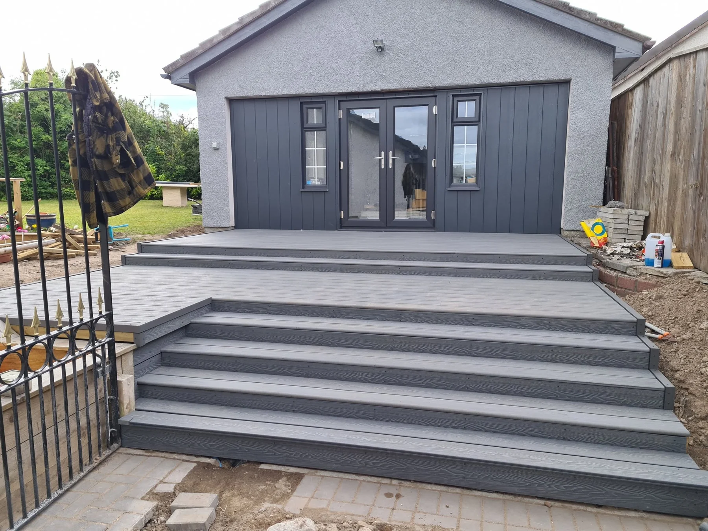

Steps & Levels
A sloping garden needs practical access. The supplied projects include broad deck steps and balustrades, with a four-step finished deck shown in the project sequence.
- Deck steps
- Raised platforms
- Access and balustrade details
PROJECT PHOTOS
See the details.
AFFORDABLE FENCING AND DECKING
Enjoy the outdoors.
Inverness · Fencing & Decking